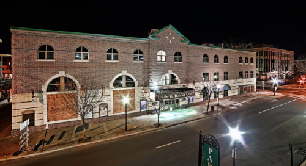

In Williamsport we have a very big community for theater and major musical productions, And you can also see multiple concerts as well in the same location and in a different location as well. Here are two examples of where you can go to see local productions and major concerts as well:
Here at CTL this is a program for the youth to have opurtunities to get started into theater, as well as other adults to get involved as well. They are also able to put on productions but not quite as big as other places would for a full blown musical. Here they learn the basics of acting, improv, dance, and just enjoying time with others. Anyone from Williamsport and surronding are welcome to come and participate. And if your lucky enough you could even see some of your friends and even family perform and enjoy their shows.
The Community arts Center houses eveything for when it comes to conecerts or even local productions of bigger musicals, for example a couple years back (as of writing this) a group of highschool students got together
with some local teachers and instructors and performed the Sponge Bob Musical that they would normally perform up in broadway.
And on top of local productions Comedians, Bands, and other productions even come to the CAC to perform for what the normally do. For example Bert Krisher, or as others know him, THE MACHINE came to Williamsport in February of 2023, And
even the Beach Boys came to williamsport to perform and so many more big names came as well.